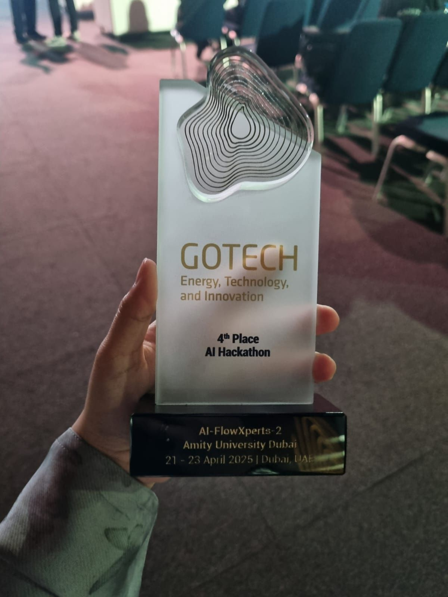
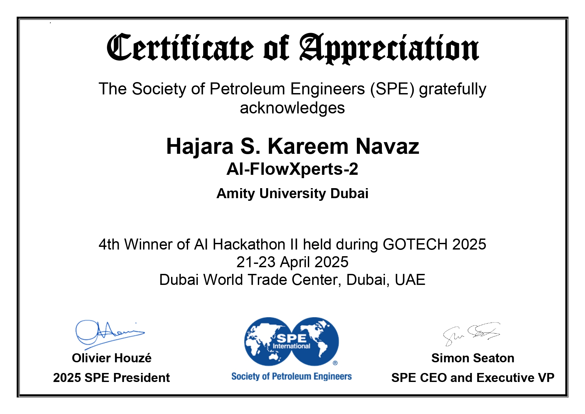
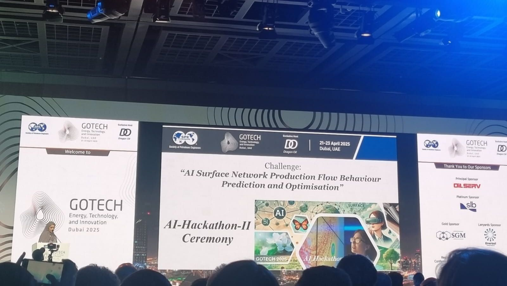

The International AI Hackathon II, held as part of the GOTECH Conference in Dubai, UAE, brought together participants from
around the world to develop innovative AI solutions for a specific challenge, "AI Surface Network Production Flow Behaviour
Prediction and Optimisation".
Over a three-month development period, we built a model using a Random Forest
Regressor combined with time-series forecast visualization to analyze production trends and support data-driven
decision-making. The project was recognized as one of the winning solutions, ranking 4th internationally and 1st
in the UAE, and we had the opportunity to present our work at the GOTECH Conference. This experience was highly
enriching, offering both technical growth and valuable exposure to industry-driven AI applications.
Hajara Sabnam

1st Winner in UAE and 4th Winner in International AI Hackathon II Held During GOTECH 2025


